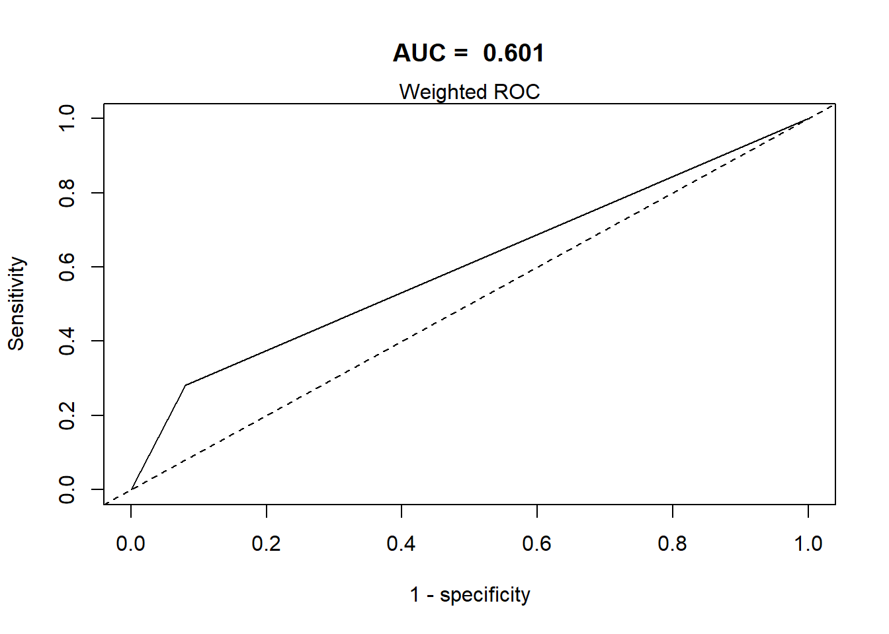
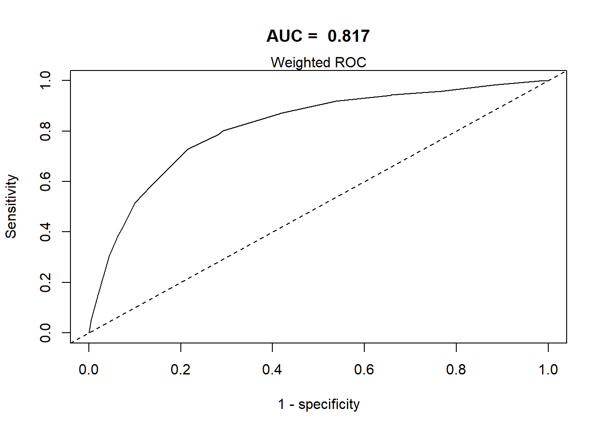

CCHS: Performance
The tutorial outlines the process for evaluating the performance of logistic regression models fitted to complex survey data using R. It focuses on two major aspects: creating Receiver Operating Characteristic (ROC) curves and conducting Archer and Lemeshow Goodness of Fit tests. Here AUC is a measure to evaluate the predictive accuracy of the model, and Archer and Lemeshow test is a statistical test to evaluate how well your model fits the observed data.
We start by importing the required R packages.
Load data
It loads two datasets from the specified paths.
Three different logistic regression models are fitted to the data:
Show the code
library(survey)
simple.model <- as.formula(I(CVD=="event") ~ OA)
fit0 <- svyglm(simple.model,
design = w.design,
family = binomial(logit))
#> Warning in eval(family$initialize): non-integer #successes in a binomial glm!
basic.model
#> I(CVD == "event") ~ OA + age + sex
#> attr(,"variables")
#> list(I(CVD == "event"), OA, age, sex)
#> attr(,"factors")
#> OA age sex
#> I(CVD == "event") 0 0 0
#> OA 1 0 0
#> age 0 1 0
#> sex 0 0 1
#> attr(,"term.labels")
#> [1] "OA" "age" "sex"
#> attr(,"order")
#> [1] 1 1 1
#> attr(,"intercept")
#> [1] 1
#> attr(,"response")
#> [1] 1
#> attr(,".Environment")
#> <environment: R_GlobalEnv>
#> attr(,"predvars")
#> list(I(CVD == "event"), OA, age, sex)
#> attr(,"dataClasses")
#> I(CVD == "event") OA age sex
#> "logical" "factor" "factor" "factor"
#> (weights)
#> "numeric"
fit5 <- svyglm(basic.model,
design = w.design,
family = binomial(logit))
#> Warning in eval(family$initialize): non-integer #successes in a binomial glm!
aic.int.model
#> I(CVD == "event") ~ OA + age + sex + married + race + edu + income +
#> bmi + phyact + fruit + bp + diab + doctor + stress + smoke +
#> drink + age:sex + bmi:diab
fit9 <- svyglm(aic.int.model,
design = w.design,
family = binomial(logit))
#> Warning in eval(family$initialize): non-integer #successes in a binomial glm!Model performance
ROC curve
This section defines a function, svyROCw, to plot the ROC curves and calculate the area under the curve (AUC). The function can handle both weighted and unweighted survey data.
- The appropriateness of the fitted logistic regression model needs to be examined before it is accepted for use.
- Plotting the pairs of - sensitivities vs - 1-specificities on a scatter plot provides a Receiver Operating Characteristic (ROC) curve.
- The area under the ROC curve = AUC / C-statistic.
- ROC/AUC should consider weights for complex surveys.
Grading Guidelines for AUC values:
- 0.90-1.0 excellent discrimination (unusual)
- 0.80-0.90 good discrimination
- 0.70-0.80 fair discrimination
- 0.60-0.70 poor discrimination
- 0.50-0.60 failed discrimination
Show the code
require(ROCR)
# WeightedROC may not be on cran for all R versions
# devtools::install_github("tdhock/WeightedROC")
library(WeightedROC)
svyROCw <- function(fit=fit,outcome=analytic2$CVD=="event", weight = NULL){
# ROC curve for
# Survey Data with Logistic Regression
if (is.null(weight)){ # require(ROCR)
prob <- predict(fit, type = "response")
pred <- prediction(as.vector(prob), outcome)
perf <- performance(pred, "tpr", "fpr")
auc <- performance(pred, measure = "auc")
auc <- auc@y.values[[1]]
roc.data <- data.frame(fpr = unlist(perf@x.values), tpr = unlist(perf@y.values),
model = "Logistic")
with(data = roc.data,plot(fpr, tpr, type="l", xlim=c(0,1), ylim=c(0,1), lwd=1,
xlab="1 - specificity", ylab="Sensitivity",
main = paste("AUC = ", round(auc,3))))
mtext("Unweighted ROC")
abline(0,1, lty=2)
} else { # library(WeightedROC)
outcome <- as.numeric(outcome)
pred <- predict(fit, type = "response")
tp.fp <- WeightedROC(pred, outcome, weight)
auc <- WeightedAUC(tp.fp)
with(data = tp.fp,plot(FPR, TPR, type="l", xlim=c(0,1), ylim=c(0,1), lwd=1,
xlab="1 - specificity", ylab="Sensitivity",
main = paste("AUC = ", round(auc,3))))
abline(0,1, lty=2)
mtext("Weighted ROC")
}
}Show the code
summary(analytic2$weight)
#> Min. 1st Qu. Median Mean 3rd Qu. Max.
#> 1.17 71.56 137.95 214.61 261.91 7154.95
analytic2$corrected.weight <- weights(w.design)
summary(analytic2$corrected.weight)
#> Min. 1st Qu. Median Mean 3rd Qu. Max.
#> 0.39 23.85 45.98 71.54 87.30 2384.98
svyROCw(fit=fit0,outcome=analytic2$CVD=="event", weight = analytic2$corrected.weight)
Show the code
svyROCw(fit=fit5,outcome=analytic2$CVD=="event", weight = analytic2$corrected.weight)
Show the code
svyROCw(fit=fit9,outcome=analytic2$CVD=="event", weight = analytic2$corrected.weight)
Show the code
# This function does not take in to account of strata/clusterArcher and Lemeshow test
This test helps to evaluate how well the model fits the data. A Goodness of Fit (GOF) function AL.gof is defined. If the p-value from this test is greater than a certain threshold (e.g., 0.05), the model fit is considered acceptable.
- Hosmer Lemeshow-type tests are most useful as a very crude way to screen for fit problems, and should not be taken as a definitive diagnostic of a ‘good’ fit.
- problem in small sample size
- Dependent on G (group)
- Archer and Lemeshow (2006) extended the standard Hosmer and Lemeshow GOF test for complex surveys.
- After fitting the survey weighted logistic regression, the F-adjusted mean residual goodness-of-fit test could suggest
- no evidence of lack of fit (if P-value > a reasonable cut-point, e.g., 0.05)
- evidence of lack of fit (if P-value < a reasonable cut-point, e.g., 0.05)
Show the code
AL.gof <- function(fit=fit, data = analytic2,
weight = "corrected.weight"){
# Archer-Lemeshow Goodness of Fit Test for
# Survey Data with Logistic Regression
r <- residuals(fit, type="response")
f<-fitted(fit)
breaks.g <- c(-Inf, quantile(f, (1:9)/10), Inf)
breaks.g <- breaks.g + seq_along(breaks.g) * .Machine$double.eps
g<- cut(f, breaks.g)
data2g <- cbind(data,r,g)
newdesign <- svydesign(id=~1,
weights=as.formula(paste0("~",weight)),
data=data2g)
decilemodel<- svyglm(r~g, design=newdesign)
res <- regTermTest(decilemodel, ~g)
return(res)
}Show the code
AL.gof(fit0, analytic2, weight ="corrected.weight")
#> Wald test for g
#> in svyglm(formula = r ~ g, design = newdesign)
#> F = 2.20807e-22 on 1 and 185611 df: p= 1
AL.gof(fit5, analytic2, weight ="corrected.weight")
#> Wald test for g
#> in svyglm(formula = r ~ g, design = newdesign)
#> F = 2.795204 on 8 and 185604 df: p= 0.0042898
AL.gof(fit9, analytic2, weight = "corrected.weight")
#> Wald test for g
#> in svyglm(formula = r ~ g, design = newdesign)
#> F = 2.650332 on 9 and 185603 df: p= 0.0045417Additional function
If the survey data contains strata and cluster, then the following function will be useful:
Show the code
AL.gof2 <- function(fit=fit7, data = analytic,
weight = "corrected.weight", psu = "psu", strata= "strata"){
# Archer-Lemeshow Goodness of Fit Test for
# Survey Data with Logistic Regression
r <- residuals(fit, type="response")
f<-fitted(fit)
breaks.g <- c(-Inf, quantile(f, (1:9)/10), Inf)
breaks.g <- breaks.g + seq_along(breaks.g) * .Machine$double.eps
g<- cut(f, breaks.g)
data2g <- cbind(data,r,g)
newdesign <- svydesign(id=as.formula(paste0("~",psu)),
strata=as.formula(paste0("~",strata)),
weights=as.formula(paste0("~",weight)),
data=data2g, nest = TRUE)
decilemodel<- svyglm(r~g, design=newdesign)
res <- regTermTest(decilemodel, ~g)
return(res)
}Video content (optional)
For those who prefer a video walkthrough, feel free to watch the video below, which offers a description of an earlier version of the above content.